Java03_OOP
面向对象是Java编程的重要思想，也是面试的重点考核内容。
OOP
类和对象
面向过程是流程化的，一步一步，上一步做完了，再做下一步。
面向对象是模块化的，我做我的，你做你的，我需要你做的话，我就告诉你一声。我不需要知道你到底怎么做，只看功劳不看苦劳。
类class
字段（Filed）
成员变量在类内部但在方法外部（方法内部的叫临时变量）
成员变量有时候也叫做实例变量，在编译时不占用内存空间，在运行时获取内存，也就是说，只有在对象实例化（new）后，字段才会获取到内存，这也正是它被称作“实例”变量的原因。
方法（Method）
构造方法（Constructor）
new一个对象
创建 Java 对象时，都会在堆内存中分配空间。
初始化对象
那怎么初始化 Person 对象（对字段赋值）呢？
第一种：通过对象的引用变量（这种方法智能在类内部的main方法中使用，因为private权限的成员变量无法在类外访问）
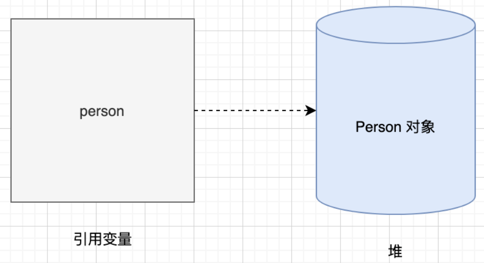
1 | public class Person { |
第二种：通过新增方法初始化
第三种：通过构造方法初始化（最标准）
1 | Person person = new Person("沉默王二", 18, 1); |
匿名对象：意味着没有引用变量
new Person();
关于对象
状态+行为+标识=对象，每个对象在内存中都会有一个唯一的地址。
在 Java 中，class 关键字用来定义一个类型，创建抽象数据类型是面向对象编程的一个基本概念。
访问修饰符
访问权限修饰符的第一个作用是，防止类的调用者接触到他们不该接触的内部实现；第二个作用是，让类的创建者可以轻松修改内部机制而不用担心影响到调用者的使用（互不干扰）。
- public
- private
- protected
组合
我们可以把一个创建好的类作为另外一个类的成员变量来使用，利用已有的类组成成一个新的类，被称为“复用”。
继承
继承是 Java 中非常重要的一个概念，子类继承父类，也就拥有了父类中 protected 和 public 修饰的方法和字段，同时，子类还可以扩展一些自己的方法和字段，也可以重写继承过来方法。
多态
在测试类中，shape1 的类型为 Shape，shape2 的类型也为 Shape，但调用 draw() 方法后，却能自动调用子类 Line 和 Circle 的 draw() 方法——多态。
1 | class Shape{ |
使用package优化代码结构
Java 内建的package机制是为了避免 class 命名冲突。在 Java 虚拟机执行的时候，JVM 只看完整类名，因此，只要包名不同，类就不同。
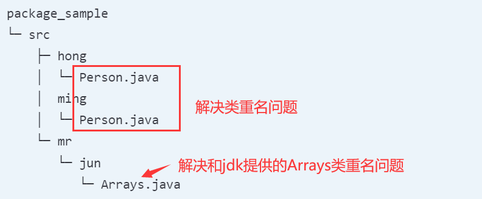
包没有父子关系：java.util和java.util.zip是不同的包，两者没有任何继承关系。
包的作用域
位于同一个包的类，可以访问包作用域的字段和方法：假设Person类定义在hello包下，Main类也定义在hello包下，在Main类中就可以直接访问Person类。
导入包
第一种，直接写出完整类名；
第二种写法是用import语句，导入完整类名，然后写简单类名；
还有一种import static的语法，它可以导入一个类的静态字段和静态方法（很少使用）：
1 | package main; |
Java 编译器最终编译出的.class文件只使用 完整类名，因此，在代码中，当编译器遇到一个class名称时：
- 如果是完整类名，就直接根据完整类名查找这个
class； - 如果是简单类名，按下面的顺序依次查找：
- 查找当前
package是否存在这个class； - 查找
import的包是否包含这个class； - 查找
java.lang包是否包含这个class。
- 查找当前
因此，编写 class 的时候，编译器会自动帮我们做两个 import 动作：默认自动import当前package的其他class，默认自动import java.lang.*。如果按照上面的规则还无法确定类名，则编译报错。
如果有两个 class 名称相同，例如，mr.jun.Arrays和java.util.Arrays，那么只能import其中一个，另一个必须写完整类名。
包的最佳实践
推荐的做法是使用倒置的域名来确保唯一性。
Java变量
局部变量
在方法体内声明的变量被称为局部变量，该变量只能在该方法内使用，类中的其他方法并不知道该变量。
- 局部变量在方法、构造方法、或者语句块被执行的时候创建，当它们执行完成后，将会被销毁。
- 局部变量是在栈上分配的。
- 局部变量没有默认值，所以局部变量被声明后，必须经过初始化，才可以使用。
成员变量
在类内部但在方法体外声明的变量称为成员变量，或者实例变量，或者字段。之所以称为实例变量，是因为该变量只能通过类的实例（对象）来访问。
一般情况下应该把成员变量设为私有，成员变量的值应该至少被一个方法、构造方法或者语句块引用，使得外部能够通过这些方式获取实例变量信息。
静态变量
通过 static 关键字声明的变量被称为静态变量（类变量），通过类名.静态变量就可以访问了，不需要创建类的实例。
无论一个类创建了多少个对象，类只拥有静态变量的一份拷贝。
静态变量在类中以 static 关键字声明，但必须在方法构造方法和语句块之外。
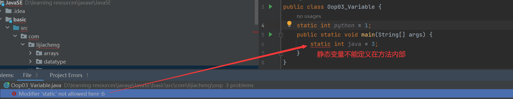
静态变量储存在静态存储区。
静态变量在程序开始时创建，在程序结束时销毁。
与成员变量具有相似的可见性。但为了对类的使用者可见，大多数静态变量声明为 public 类型（为了方便在类外使用）。
常量
- 代表常数，便于修改（例如：圆周率的值，
final double PI = 3.14） - 增强程序的可读性（例如：常量 UP、DOWN 用来代表上和下，
final int UP = 0）
Java方法
访问权限：它指定了方法的可见性。Java 提供了四种访问权限修饰符：
- public：该方法可以被所有类访问。
- private：该方法只能在定义它的类中访问。
- protected：该方法可以被同一个包中的类，或者不同包中的子类访问。
- default：如果一个方法没有使用任何访问权限修饰符，那么它是 package-private 的，意味着该方法只能被同一个包中的类可见。
方法名：驼峰命名
实例方法
没有使用 static 关键字修饰，但在类中声明的方法被称为实例方法，在调用实例方法之前，必须创建类的对象。
getter 方法用来获取私有变量（private 修饰的字段）的值，setter 方法用来设置私有变量的值。
静态方法
类内的 static 方法可以直接通过函数名调用：
1 | public class Oop03_Variable { |
类外的 static 方法要用类名.函数名来调用：
1 | public class Oop03_Variable { |
抽象方法
没有方法体的方法被称为抽象方法。如果类有抽象方法的话，这个类就必须是抽象的。可以使用abstract关键字创建抽象方法和抽象类。
当一个类继承了抽象类后，就必须重写抽象方法。
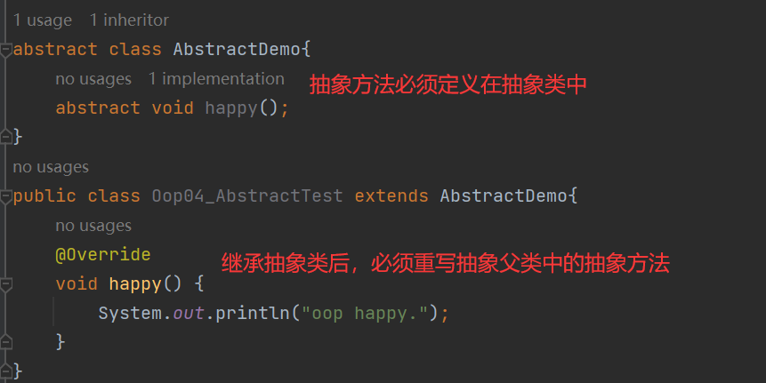
可变参数
阿里巴巴开发手册写道：
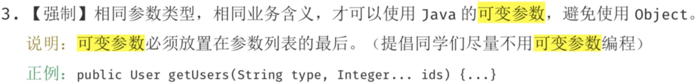
1 | public class Oop05_VariableParam { |
当使用可变参数的时候，实际上是先创建了一个数组，该数组的大小就是可变参数的个数，然后将参数放入数组当中，再将数组传递给被调用的方法：
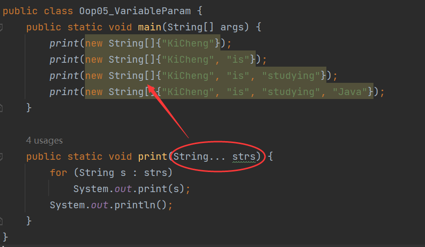
当一个方法需要处理任意多个相同类型的对象时，就可以定义可变参数。Java 中有一个很好的例子，就是 String 类的 format() 方法：
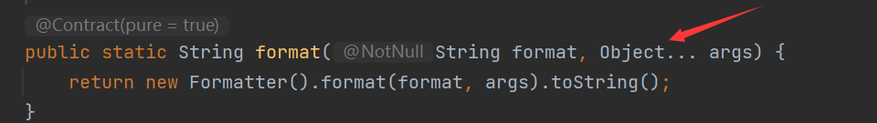
1 | System.out.println(String.format("年纪是: %d 名字是: %s", 22, "KiCheng")); |
构造方法
构造方法不能是抽象的（abstract）、静态的（static）、最终的（final）、同步的（synchronized）：
- 由于构造方法不能被子类继承，所以用 final 和 abstract 关键字修饰没有意义；
- 构造方法用于初始化一个对象，所以用 static 关键字修饰没有意义；
- 多个线程不会同时创建内存地址相同的同一个对象，所以用 synchronized 关键字修饰没有必要。
默认构造方法
默认构造方法的目的主要是为对象的字段提供默认值。
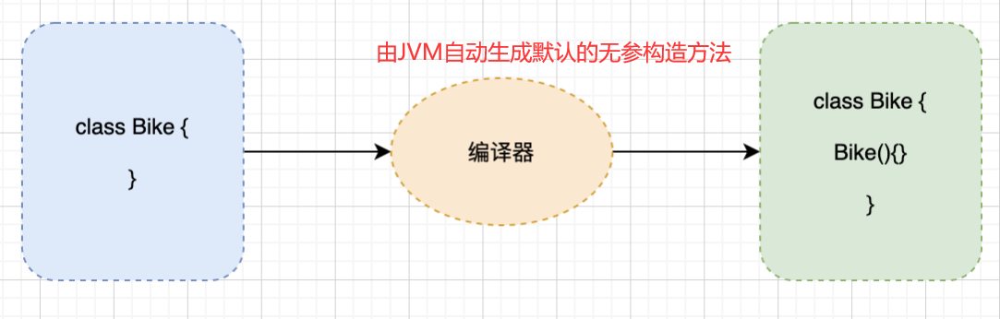
有参构造方法
有参构造方法可以为不同的对象提供不同的值。如果没有有参构造方法的话，只能通过setter方法为对象赋值了。
重载构造方法
构造方法的重载也很简单，只需要提供不同的参数列表即可。编译器会通过参数的数量来决定应该调用哪一个构造方法。
复制对象
通过构造方法
1
2
3
4
5
6
7
8
9
10
11
12
13
14
15
16
17
18
19
20
21
22
23
24public class Oop06_Constructor {
private String name;
private int age;
public Oop06_Constructor(String name, int age){
this.name = name;
this.age = age;
}
public Oop06_Constructor(Oop06_Constructor constructor){ // 复制新对象的构造方法
this.name = constructor.name;
this.age = constructor.age;
}
public void out(){
System.out.println("name: " + name + " age: " + age);
}
public static void main(String[] args) {
Oop06_Constructor c1 = new Oop06_Constructor("KiCheng", 22);
Oop06_Constructor c2 = new Oop06_Constructor(c1); // 通过构造方法复制一个新的对象
System.out.println(c1 == c2); // false
}
}通过对象的值：直接拿 p1 的字段值复制给 p2 对象
通过 Object 类的
clone()方法：必须先实现 Cloneable 接口的clone()方法1
2
3
4
5
6
7
8
9
10
11
12
13
14
15
16
17
18
19
20
21
22
23
24public class Oop06_Constructor implements Cloneable{
private String name;
private int age;
public Oop06_Constructor(String name, int age){
this.name = name;
this.age = age;
}
public Oop06_Constructor(Oop06_Constructor constructor){
this.name = constructor.name;
this.age = constructor.age;
}
public void out(){
System.out.println("name: " + name + " age: " + age);
}
public static void main(String[] args) throws CloneNotSupportedException {
Oop06_Constructor c1 = new Oop06_Constructor("KiCheng", 22);
Oop06_Constructor c3 = (Oop06_Constructor) c1.clone();
System.out.println(c1 == c3); // false
}
}
访问权限修饰符
不想让别人看的就 private，想让人看的就 public，想同一个班级/部门看的就默认，想让下一级看的就 protected。
修饰类
- 默认访问权限（包访问权限）：用来修饰类的话，表示该类只对同一个包中的其他类可见。
- public：用来修饰类的话，表示该类对其他所有的类都可见。
修饰成员变量或方法
- 默认访问权限（包访问权限）：如果一个类的方法或变量被包访问权限修饰，也就意味着只能在同一个包中的其他类中显示地调用该类的方法或者变量，在不同包中的类中不能显式地调用该类的方法或变量。
- private：如果一个类的方法或者变量被 private 修饰，那么这个类的方法或者变量只能在该类本身中被访问，在类外以及其他类中都不能显式的进行访问。
- protected：如果一个类的方法或者变量被 protected 修饰，对于同一个包的类，这个类的方法或变量是可以被访问的。对于不同包的类，只有继承于该类的类才可以访问到该类的方法或者变量。
- public：被 public 修饰的方法或者变量，在任何地方都是可见的。
代码初始化块
对象在初始化的时候会先调用构造方法，这是毫无疑问的，只不过，构造方法在执行的时候会把代码初始化块放在构造方法中其他代码之前。
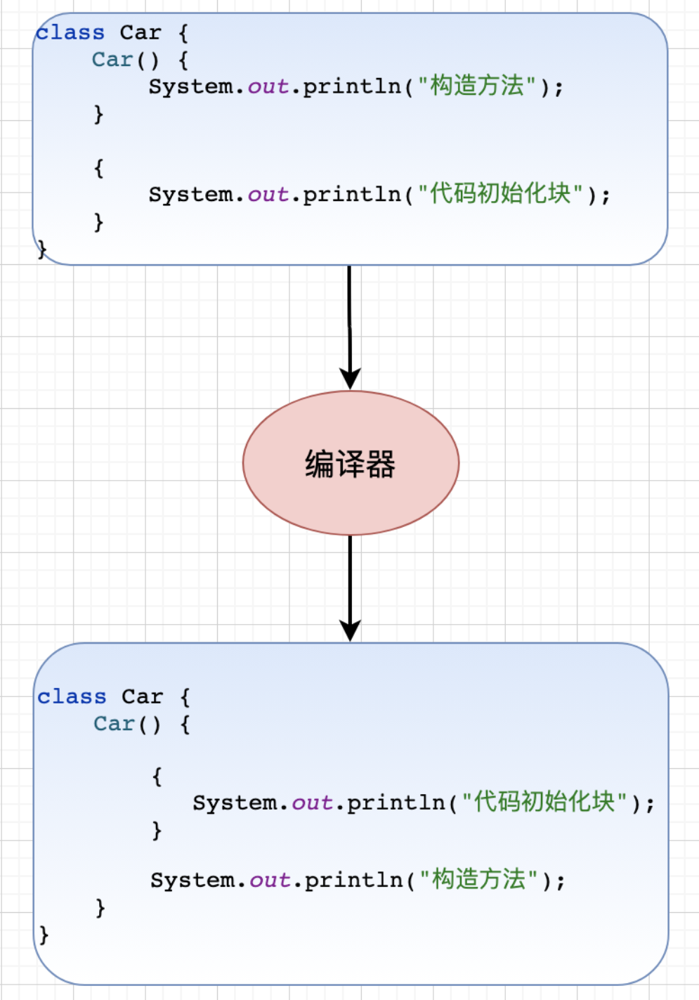
子类的构造方法在执行时会会首先主动调用父类的构造方法：
1 | public class Oop07_InitBlock { |
代码初始化块是放在构造方法中执行的，只不过比较靠前。程序的结果自然而然是：
1 | 父类构造方法 |
而静态初始化块在类加载时执行，只会执行一次，并且优先于实例初始化块和构造方法的执行；实例初始化块在每次创建对象时执行，在构造方法之前执行：
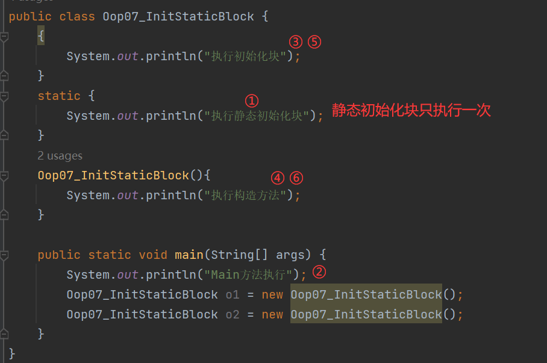
抽象类
定义抽象类的时候需要用到关键字 abstract，放在 class 关键字前。
关于抽象类的命名，《阿里的 Java 开发手册》上有强调，“抽象类命名要使用 Abstract 或 Base 开头”，这条规约还是值得遵守的，真正做到名如其意。
抽象类不能通过 new 关键字实例化，但可以有子类。
如果一个类定义了一个或多个抽象方法，那么这个类必须是抽象类；抽象类中既可以定义抽象方法，也可以定义普通方法。
下面来看一个抽象类的用法：
1 | /** |
BaseFileReader 类设计的就非常合理，并且易于扩展，子类只需要专注于具体的大小写实现方式就可以了。
接口
接口的本意是对方法进行抽象。没有使用 private、default 或者 static 关键字修饰的方法是隐式抽象的，在编译的时候会自动加上 public abstract 修饰符。接口通过 interface 关键字来定义，它可以包含一些常量和方法：
1 | public interface Electronic { |
这段代码反编译后的字节码：
1 | public interface Electronic |
上面这个接口涵盖以下核心知识点：
接口中定义的所有变量或者方法，都会自动添加上
public关键字；接口中定义的变量会在编译的时候自动加上
public static final修饰符；没有使用
private、default或者static关键字修饰的方法是隐式抽象的，在编译的时候会自动加上public abstract修饰符（这是定义接口的本意）；从 Java 8 开始，接口中允许有静态方法。静态方法无法由（实现了该接口的）类的对象调用，它只能通过接口名来调用；
接口中允许定义
default方法也是从 Java 8 开始的，它始终由一个代码块组成，为实现该接口而不覆盖该方法的类提供默认实现。允许在接口中定义默认方法的理由很充分，因为一个接口可能有多个实现类，这些类就必须实现接口中定义的抽象类，否则编译器就会报错。假如我们需要在所有的实现类中追加某个具体的方法，在没有
default方法的帮助下，我们就必须挨个对实现类进行修改。
除此之外，我们还应该知道：
- 接口可以是空的，最典型的例子就是 Serializable 接口，用来为序列化的具体实现提供一个标记；
- 不要在定义接口的时候使用 final 关键字，否则会报编译错误，因为接口就是为了让子类实现的，而 final 阻止了这种行为；
- 接口的抽象方法不能是 private、protected 或者 final；
- 接口的变量是隐式
public static final（常量），所以其值无法改变。
接口的作用
1）使某些实现类具有我们想要的功能
2）Java 原则上只支持单一继承**，但通过接口可以实现多重继承的目的
ClassC 同时继承了 ClassA 和 ClassB，ClassC 的对象在调用 ClassA 和 ClassB 中重写的方法时，就不知道该调用 ClassA 的方法，还是 ClassB 的方法。
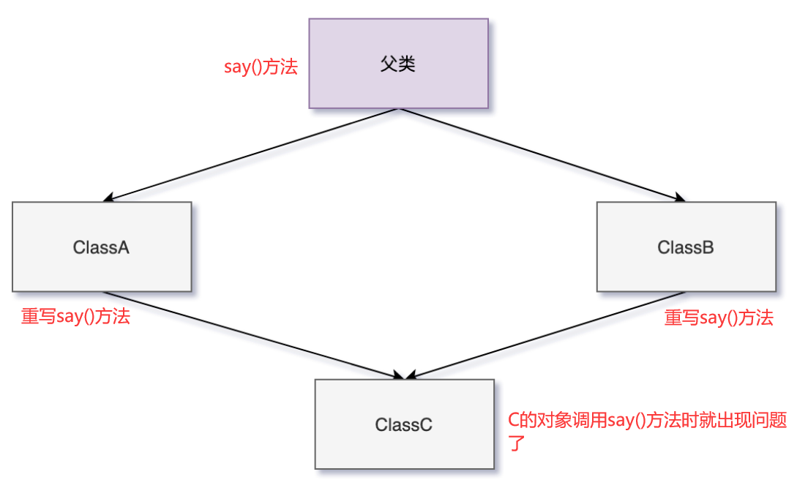
在某种形式上，接口实现了多重继承的目的。
1 | public class Pig implements Fly,Run{ |
3）实现多态：同一个事件发生在不同的对象上会产生不同的结果
1 | interface ShapeInterface { |
多态存在的三个前提：
- 要有继承关系，比如说 Circle 和 Square 都实现了 Shape 接口。
- 子类要重写父类的方法，Circle 和 Square 都重写了
name()方法。 - 父类引用指向子类对象，s1 和 s2 的类型都为 Shape，但前者指向的是 Circle 对象，后者指向的是 Square 对象。
接口的三种设计模式
在使用接口的时候，经常会用到三种模式，分别是策略模式、适配器模式和工厂模式。
抽象类与接口的区别
有抽象方法的类被称为抽象类，也就意味着抽象类中还能有不是抽象方法的方法，这样的类就不能算作纯粹的接口，尽管它也可以提供接口的功能——只能说抽象类是普通类与接口之间的一种中庸之道。而接口，在 Java 中是一个抽象类型，是抽象方法的集合。
接口中的成员变量隐式为
static final，但抽象类不是的。接口中的方法都是隐式
public的。一个类可以实现多个接口，但只能继承一个抽象类。
Java内部类
一个类定义在另外一个类里面或者一个方法里面，这样的类叫做内部类。一般来说，内部类分为成员内部类、局部内部类、匿名内部类和静态内部类。
封装继承多态
封装
封装可以使我们更容易地修改类的内部实现，而无需修改使用了该类的代码。
封装可以对成员变量进行更精确的控制。
继承
减少了代码量，也使得代码结构更加清晰可见。
1）单继承：一个子类只有一个父类
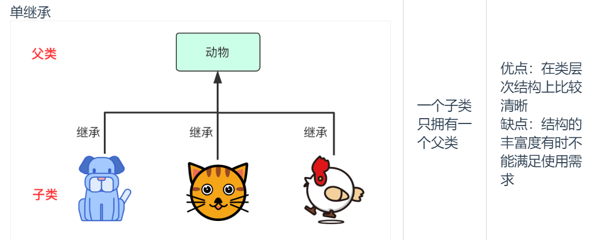
2）多继承：一个子类有多个直接的父类
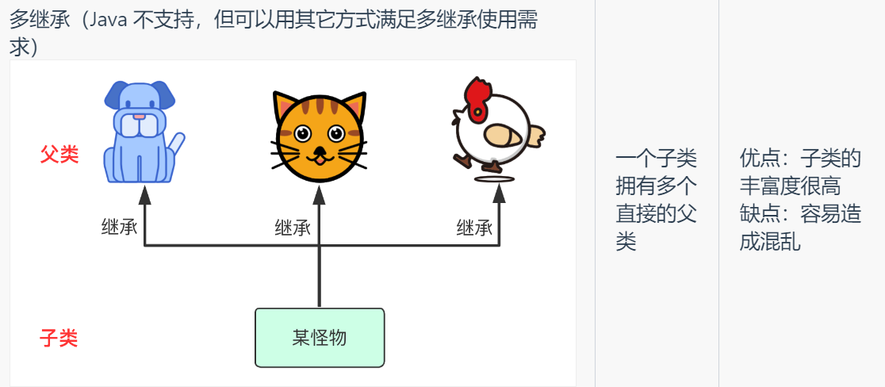
Java 不支持类的多继承，会导致菱形继承的混乱：
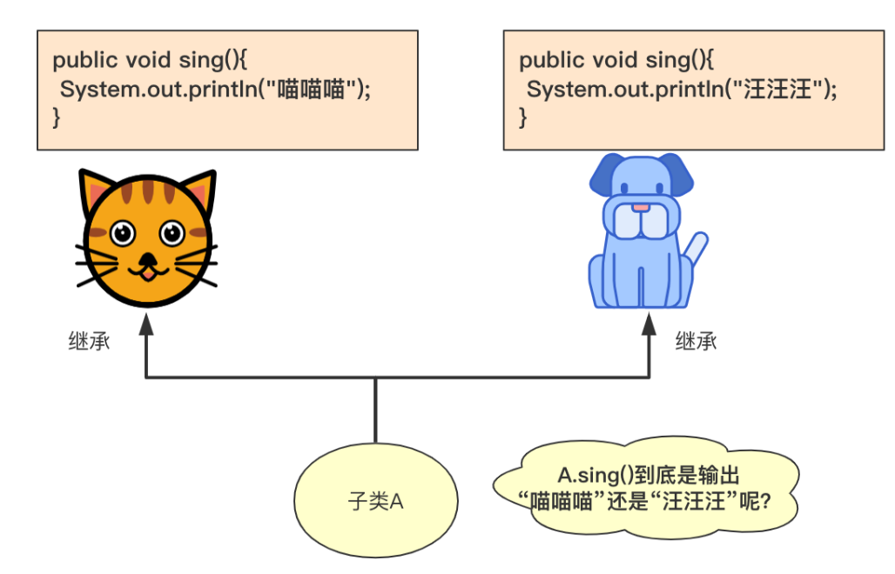
Java 虽然不支持多继承，但是 Java 有三种实现多继承效果的方式，分别是内部类、多层继承和实现接口。
内部类可以继承一个与外部类无关的类，保证了内部类的独立性，正是基于这一点，可以达到多继承的效果。
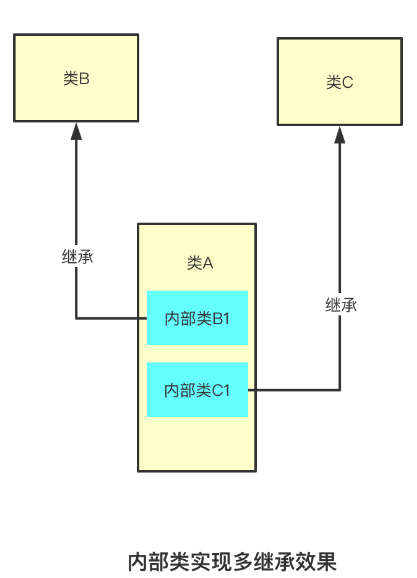
多层继承：子类继承父类，父类如果还继承其他的类，那么这就叫多层继承。
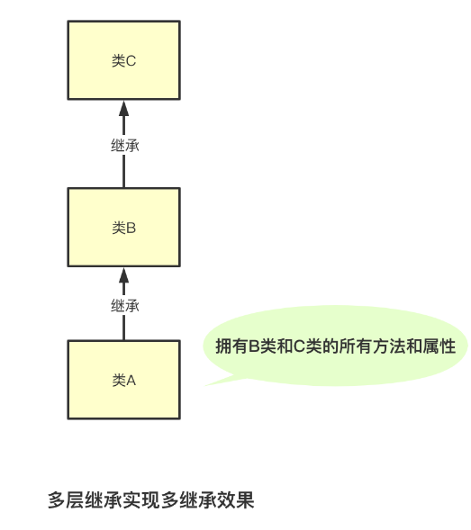
- 实现接口无疑是满足多继承使用需求的最好方式，一个类可以实现多个接口满足自己在丰富性和复杂环境的使用需求。
继承中的构造方法
1）父类的构造方法不能被继承；
2）子类的构造过程必须调用其父类的构造方法。Java 虚拟机构造子类对象前会先构造父类对象，父类对象构造完成之后再来构造子类特有的属性，这被称为内存叠加；
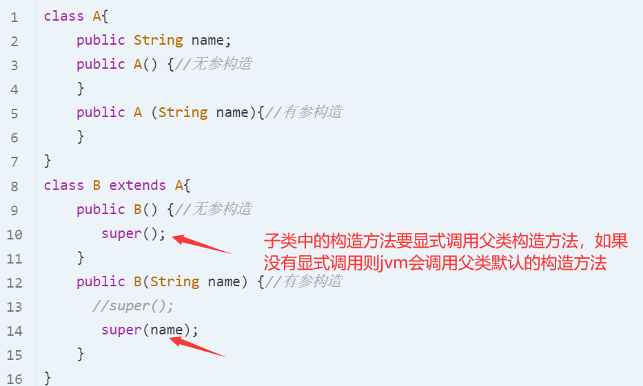
继承中的访问修饰符
Java 子类重写继承的方法时，不可以降低方法的访问权限，子类继承父类的访问修饰符作用域不能比父类小，也就是更加开放。
继承中的非访问修饰符
static：可以直接通过类访问，不需要创建一个类的对象来访问成员
final
- final变量：变量一旦赋值后，不能被重新赋值
- final方法：父类中的 final 方法可以被子类继承，但是不能被子类重写
- final 类不能被继承，没有类能够继承 final 类的任何特性
abstract
- 抽象方法可以表达概念但无法具体实现
- 有抽象方法的类必须是抽象类，抽象类可以表达概念但是无法构造实体的类
Object类
像 toString()、equals()、hashCode()、wait()、notify()、getClass()等都是 Object 的方法。其中遇到更多的就是 toString()方法和 equals()方法，我们经常需要重写这两种方法满足我们的使用需求。
toString()方法表示返回该对象的字符串，由于各个对象构造不同所以需要重写，如果不重写的话默认返回 类名@hashCode 格式。如果重写 toString() 方法后直接调用 toString() 方法就可以返回我们自定义的该类转成字符串类型的内容输出。
equals()方法主要比较两个对象是否相等，因为对象的相等不一定非要严格要求两个对象地址上的相同，有时内容上的相同我们就会认为它相等，比如 String 类就重写了 euqals() 方法，通过字符串的内容比较是否相等。
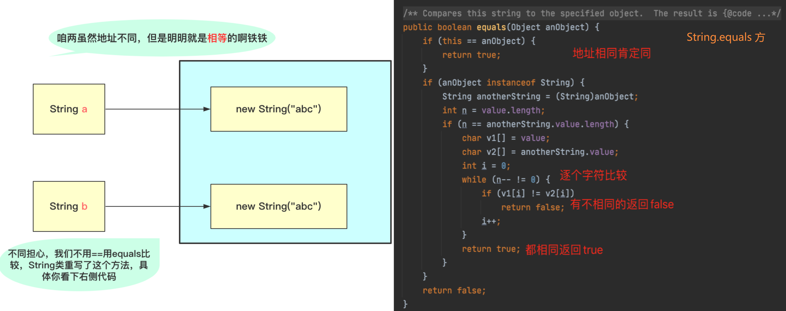
Java 转型
向上转型：
通过子类对象(小范围)实例化父类对象(大范围)，这种属于自动转换。
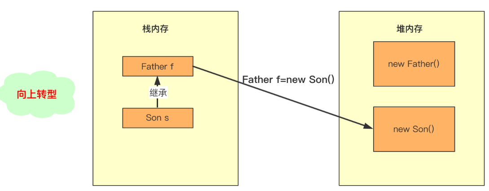
向下转型：完成了向下转型，就可以调用一些子类特有而父类没有的方法 。
通过父类对象(大范围)实例化子类对象(小范围)，在书写上父类对象需要加括号()强制转换为子类类型。但父类引用变量实际引用必须是子类对象才能成功转型。
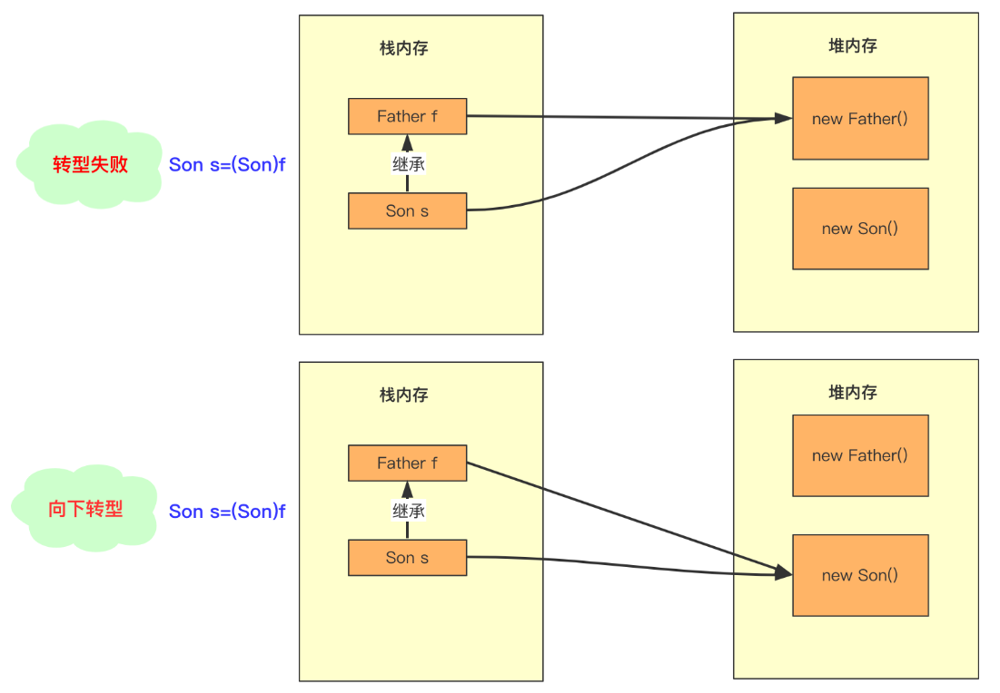
子父类初始化顺序
- 父类中静态成员变量和静态代码块
- 子类中静态成员变量和静态代码块
- 父类中普通成员变量和代码块，父类的构造方法
- 子类中普通成员变量和代码块，子类的构造方法
总的来说：静态>非静态，静态成员变量和静态代码块在类加载的时候就初始化，而非静态变量和代码块在对象创建的时候初始化。父类>子类，在创建子类对象的时候需要先创建父类对象，所以父类优先于子类。非构造方法>构造方法，在调用构造方法的时候，是对成员变量进行一些初始化操作，所以普通成员变量和代码块优于构造方法执行。
1 | public class Oop10_Inherit { |
执行结果如下:
1 | 1父类static |
多态
Java 多态是指在面向对象编程中，同一个类的对象在不同情况下表现出不同的行为和状态。
多态实现条件：
- 子类可以对从父类继承的方法进行重新实现，使得子类对象调用这个方法时表现出不同的行为（继承 + 重写方法）
- 可以将子类对象赋给父类类型的变量，这样就可以通过父类类型的变量调用子类中重写的方法，实现多态（父类引用指向子类对象）
多态与后期绑定
在执行 wanger.write() 时，由于编译器只有一个 Wanger 引用，它怎么知道究竟该调用父类 Wanger 的 write() 方法，还是子类 Wangxiaoer 的 write() 方法呢？
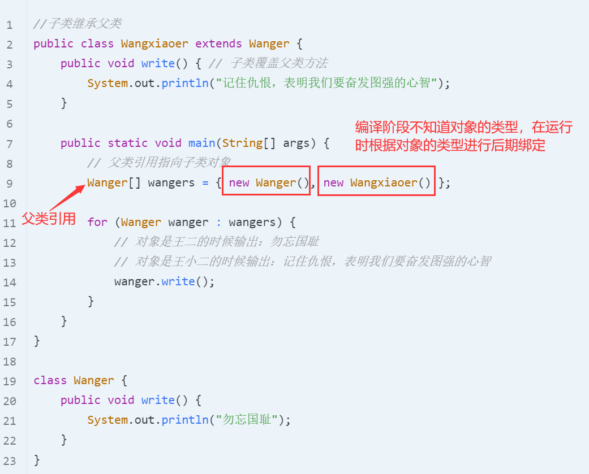
多态与构造方法（易错点）
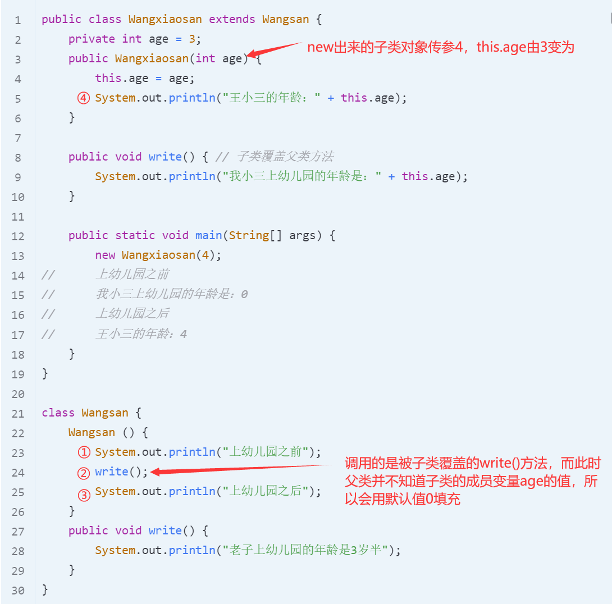
多态与向下转型
向下转型是指将父类引用强转为子类类型，这是不安全的。因为有的时候，父类引用指向的是父类对象，向下转型就会抛出 ClassCastException，表示类型转换失败；但如果父类引用指向的是子类对象，那么向下转型就是成功的。
1 | public class Oop11_DownCasting { |
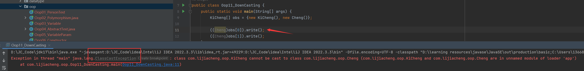
this与super
this
作为引用变量，指向当前对象；
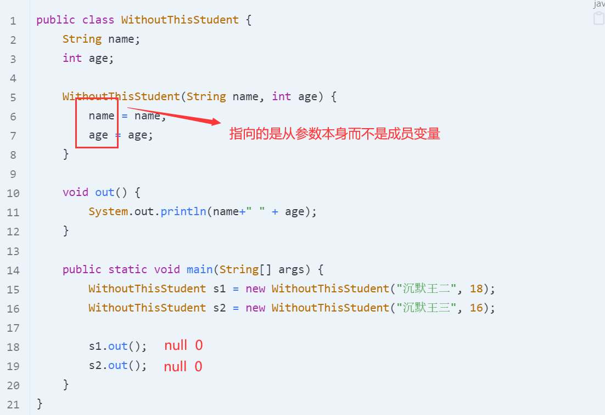
调用当前类的方法；
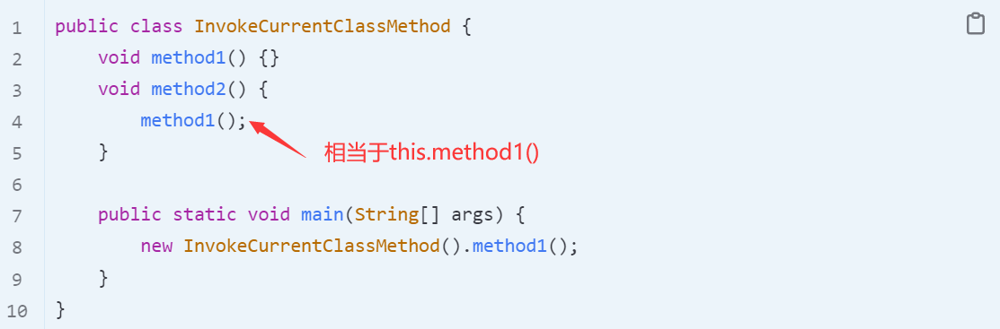
this()可以调用当前类的构造方法；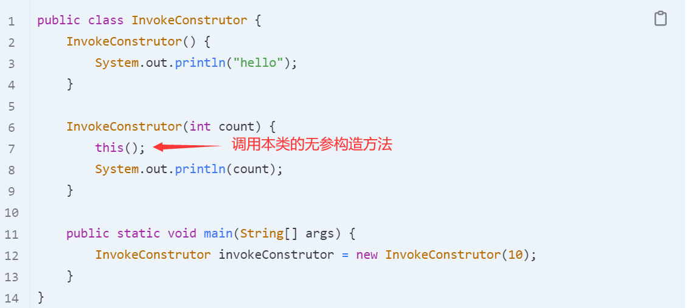
当然也可以在无参构造方法中调用
this()并传递参数调用有参构造方法，但是需要注意的是**this()必须放在构造方法的第一行，否则会报错**。this 可以作为参数在方法中传递；
this关键字可以作为参数在方法中传递，此时，它指向的是当前类的对象。this 可以作为参数在构造方法中传递；
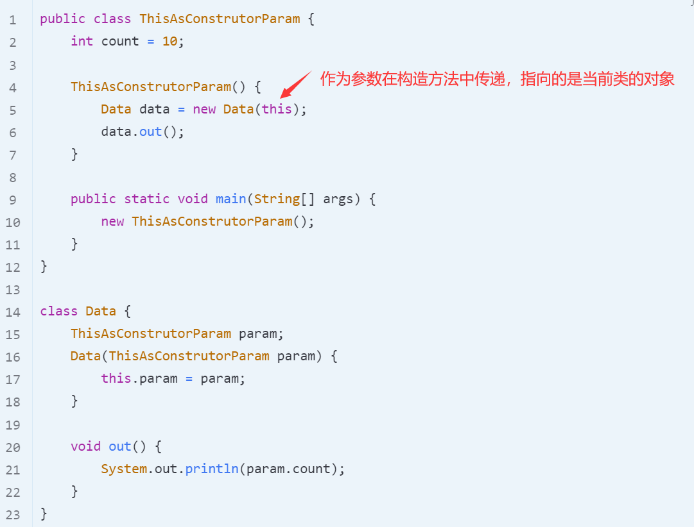
this 可以作为方法的返回值，返回当前类的对象。
this关键字作为方法的返回值的时候，方法的返回类型为类的类型。
super
指向父类对象；
1
2
3
4
5
6
7
8
9
10class Animal {
String color = "黑色";
}
class Dog extends Animal {
String color = "白色";
public void printColor(){
System.out.println(color); // 等效于this.color
System.out.println(super.color);
}
}调用父类的方法；
当子类和父类的方法名相同时，可以使用 super 关键字来调用父类的方法。换句话说，super 关键字可以用于方法重写时访问到父类的方法。
super()可以调用父类的构造方法。子类 Dog 的构造方法中，第一行代码为
super()，它就是用来调用父类的构造方法的。在默认情况下，super()是可以省略的，编译器会主动去调用父类的构造方法。也就是说，子类即使不使用super()主动调用父类的构造方法，父类的构造方法仍然会先执行。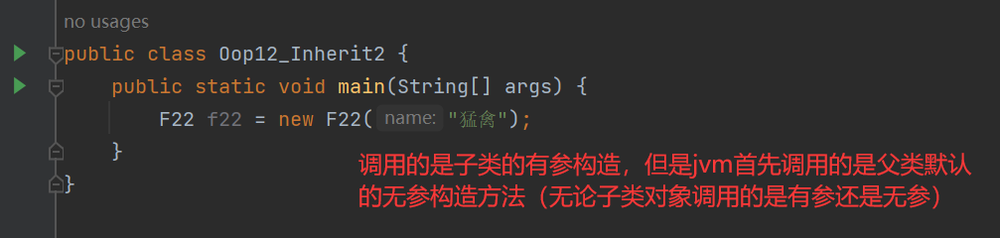
程序结果：
1 | 父类默认构造方法 |
static关键字
static 关键字的作用可以用一句话来描述：方便在没有创建对象的情况下进行调用，包括变量和方法。
静态变量
静态变量只在类加载的时候获取一次内存空间，这使得静态变量很节省内存空间。
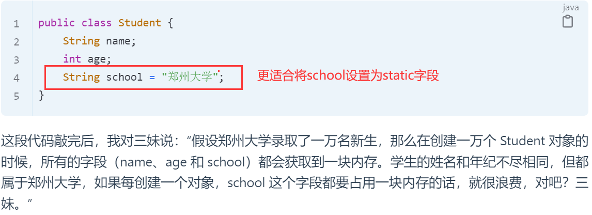
此时如果 new 两个 Student 对象，在内存中存储是下图这样的：
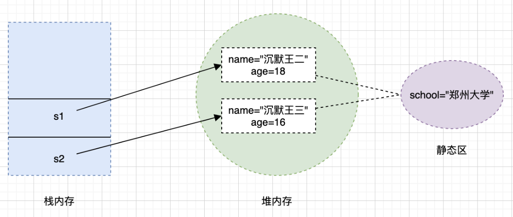
为了深入理解静态变量，我们创建一个成员变量 count，并且在构造函数中让它自增。
1 | public class Counter { |
因为成员变量会在创建对象的时候获取内存，因此每一个对象都会有一个 count 的副本， count 的值并不会随着对象的增多而递增。
1 | public class StaticCounter { |
由于静态变量只会获取一次内存空间，所以任何对象对它的修改都会得到保留，所以每创建一个对象，count 的值就会加 1，所以最终的结果是 3。这就是静态变量和成员变量之间的区别。
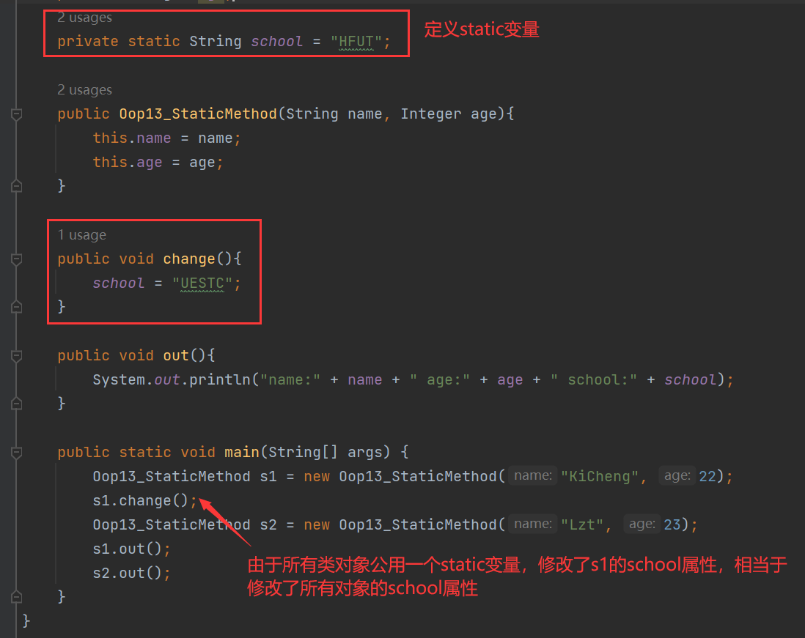
静态方法
静态方法有如下特征：静态方法属于这个类而不是这个类的对象；调用静态方法的时候不需要创建这个类的对象；静态方法可以访问静态变量。
需要注意的是，静态方法不能访问非静态变量和调用非静态方法，否则就会报错：
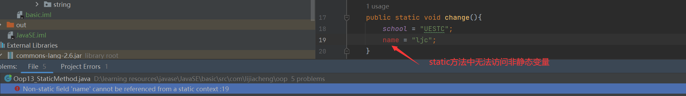
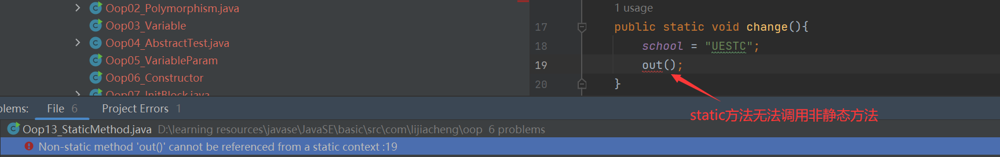
Java 的main方法为什么是静态的？如果 main 方法不是静态的，就意味着 Java 虚拟机在执行的时候需要先创建一个对象才能调用 main 方法，而 main 方法作为程序的入口，创建一个额外的对象显得非常多余。
静态代码块
静态代码块通常用来初始化一些静态变量，它会优先于 main() 方法执行。
1 | public class StaticBlockDemo { |
既然静态代码块先于
main()方法执行，那没有main()方法的 Java 类能执行成功吗？Java 7 开始就无法执行了。
静态内部类
常见的内部类有四种，成员内部类、局部内部类、匿名内部类和静态内部类，限于篇幅原因，前三种不在我们本次的讨论范围之内。
第一，静态内部类不能访问外部类的所有成员变量；第二，静态内部类可以访问外部类的所有静态变量，包括私有静态变量。第三，外部类不能声明为 static。
final关键字
final变量
比如说我们声明一个 final 修饰的对象，如果将 pig 对象重新赋值编译器就会报错。但我们仍然可以去修改 pig 对象的字段属性值。
1 | final Pig pig = new Pig(); |
final 和 static 一起修饰的成员变量叫做常量，常量名必须全部大写。
有时候，我们还会用 final 关键字来修饰参数，它意味着参数在方法体内不能被再修改。
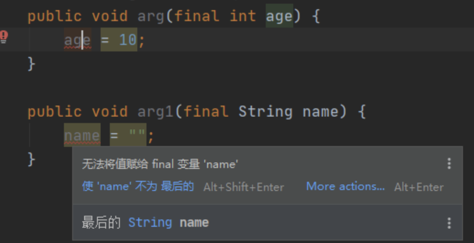
final方法
被 final 修饰的方法不能被重写。如果我们在设计一个类的时候，认为某些方法不应该被重写，就应该把它设计成 final 的。
final类
如果一个类使用了 final 关键字修饰，那么它就无法被继承。
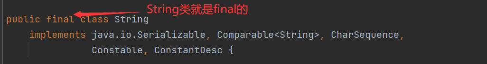
String 类是 final 的原因：
- 为了实现字符串常量池
- 为了线程安全
- 为了 HashCode 的不可变性
instanceof关键字
instanceof关键字的用法非常简单，用意也非常简单——判断对象是否符合指定的类型。
1 | (object) instanceof (type) |
来写一个简单的用法：
1 | public class Oop14_InstanceOf { |
因为 Ring 继承了 Round，而 Ring 又实现了 Shapes 接口。而 instanceof 操作符正是基于类与类之间的继承关系，以及类与接口之间的实现关系的。
但如果要比较的对象和要比较的类型之间没有关系，当然是不能使用 instanceof 进行比较的。
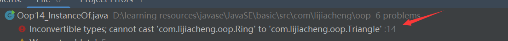
那如果对象为 null ：因为所有的对象都可以为 null，所以也不好确定 null 到底属于哪一个类。
instanceof用法
instanceof返回的结果为 true 时，必须是该对象的类、对象所在类的父类、或作为实现类对应的接口（而不能是对象所在类的子类）。
1 | if (obj instanceof String) { |
从 JDK16 开始：
1 | if (obj instanceof String s) { |
Java的不可变对象
一个类的对象在通过构造方法创建后如果状态不会再被改变，那么它就是一个不可变（immutable）类。它的所有成员变量的赋值仅在构造方法中完成，不会提供任何 setter 方法供外部类去修改。
尽管每次修改都会创建一个新的对象，增加了内存的消耗，但这个缺点相比它带来的优点，显然是微不足道。
常见的不可见类
提到不可变类，几乎所有的程序员第一个想到的，就是 String 类。那为什么 String 类要被设计成不可变的呢？
1）常量池的需要
字符串常量池是 Java 堆内存中一个特殊的存储区域，当创建一个 String 对象时，假如此字符串在常量池中不存在，那么就创建一个；假如已经存在，就不会再创建了，而是直接引用已经存在的对象。这样做能够减少 JVM 的内存开销，提高效率。
2）hashCode需要
在Java中，字符串常常用作集合（如HashMap）的键。String类的不可变性确保了字符串对象的 hashCode 值在创建时就可以确定，并且不会在对象的生命周期内改变。
3）线程安全
如果对象的状态是可变的，那么在多线程环境下，就很容易造成不可预期的结果。而 String 是不可变的，就可以在多个线程之间共享，不需要同步处理。
除了 String 类，包装器类 Integer、Long 等也是不可变类。
手写一个不可变类
不可变类的条件：
1）确保类是 final 的，不允许被其他类继承。
2）确保所有的成员变量（字段）是 final 的，这样的话，它们就只能在构造方法中初始化值，并且不会在随后被修改。
3）不要提供任何 setter 方法。
4）如果要修改类的状态，必须返回一个新的对象。
追加一个条件，如果一个不可变类中包含了可变类的对象，那么就需要确保返回的是可变对象的副本。
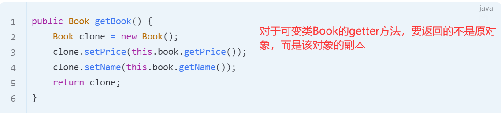
方法重写和方法重载
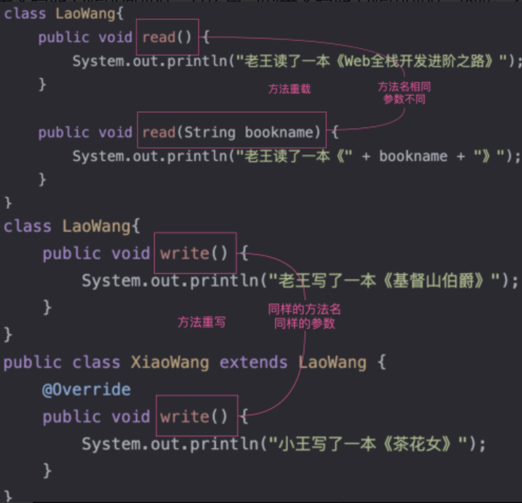
方法重载
在 Java 中有两种方式达到方法重载的目的：第一，改变参数的数目；第二，改变参数的类型。
改变参数的数目和类型都可以实现方法重载，为什么改变方法的返回值类型就不可以呢？
方法的返回值只是作为方法运行后的一个状态，它是保持方法的调用者和被调用者进行通信的一个纽带，但并不能作为某个方法的‘标识’。编译时报错优于运行时报错，所以当两个方法的名字相同，参数个数和类型也相同的时候，虽然返回值类型不同，但依然会提示方法已经被定义的错误。
由于可以通过改变参数类型的方式实现方法重载，那么当传递的参数没有找到匹配的方法时，就会发生隐式的类型转换：
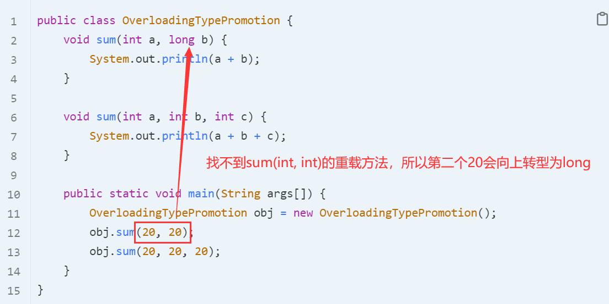
方法重写
在 Java 中，方法重写需要满足以下三个规则：① 存在类之间的继承关系； ② 重写方法和父类方法的方法名和参数相同； ③final、static的方法不能被重写；
如果一个方法是 static 的，也不允许重写，因为静态方法可用于父类以及子类的所有实例。重写的目的在于根据对象的类型不同而表现出多态，而静态方法不需要创建对象就可以使用。没有了对象，重写所需要的”对象的类型”也就没有存在的意义了。
④ 重写的方法不能使用限制等级更严格的权限修饰符； ⑤ 重写后的方法不能抛出比父类中更高级别的异常；
枚举enum
枚举（enum）,它表示一种特殊类型的类，继承自 java.lang.Enum。
1 | public enum PlayerType { |
上面这个枚举类，反编译之后的字节码是这样的，Java 编译器为我们做了很多隐式的工作：
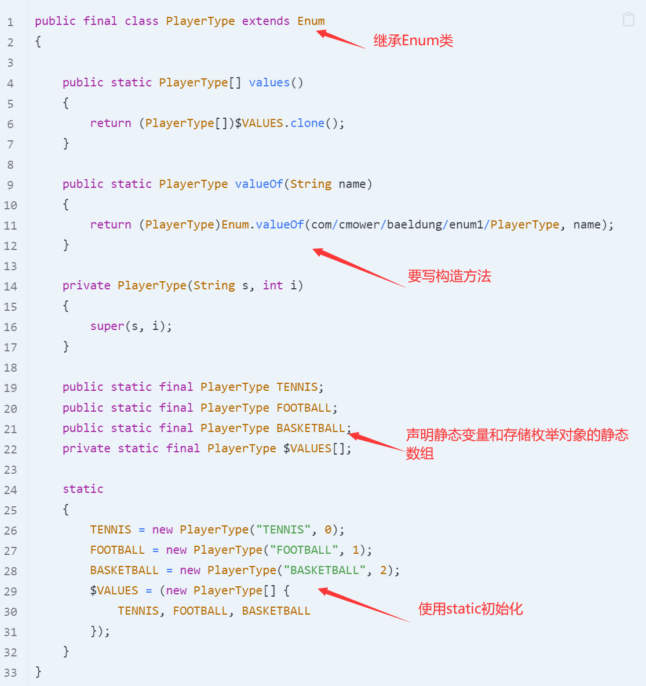
由于枚举是 final 的，所以可以确保在 Java 虚拟机中仅有一个常量对象，基于这个原因，我们可以使用“==”运算符来比较两个枚举是否相等：
1 | Player player = new Player(); |
- Post title：Java03_OOP
- Post author：KiCheng
- Create time：2024-03-05 22:14:22
- Post link：https://kicheng.github.io/2024/03/05/Java03-面向对象/
- Copyright Notice：All articles in this blog are licensed under BY-NC-SA unless stating additionally.